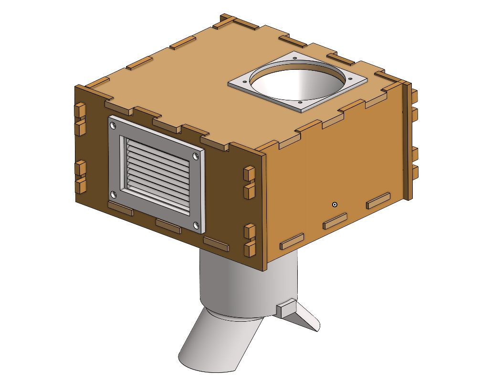
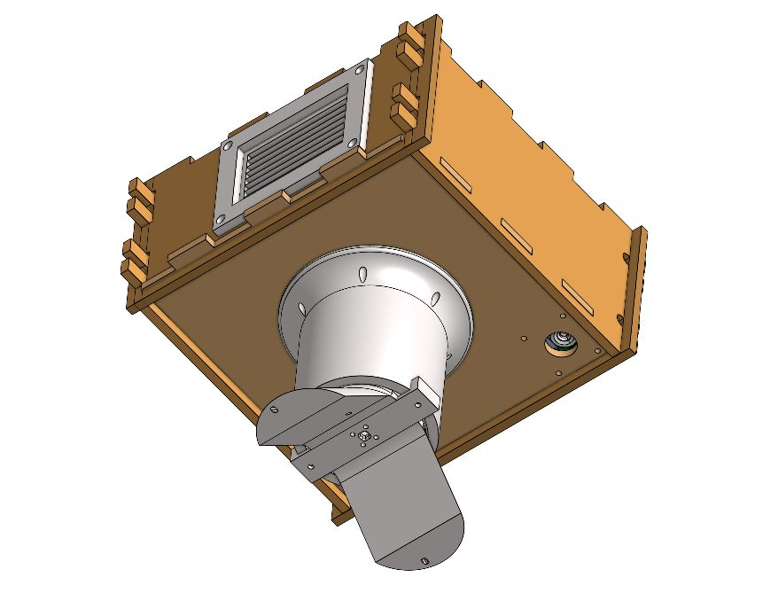
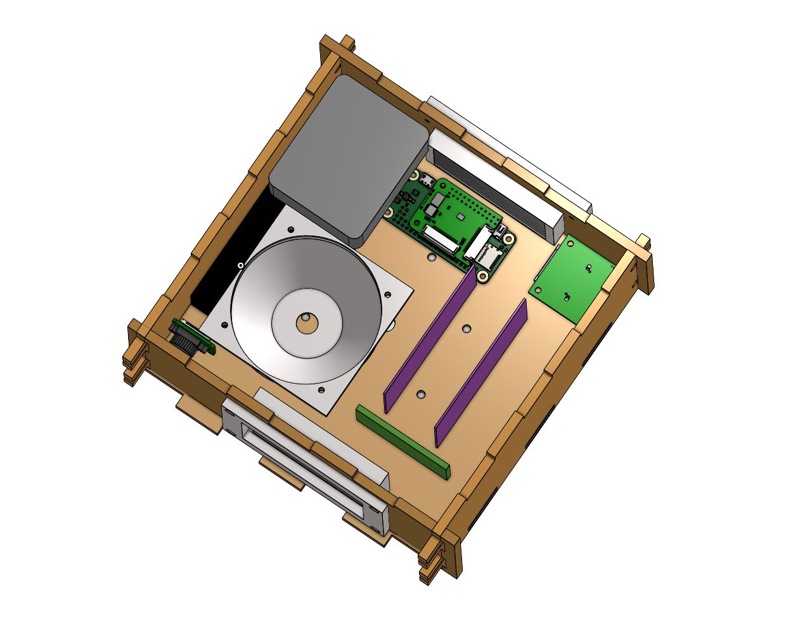

Project 02 · Knights Satellite Club
KAOS-2
Designing, building and now reworking a 4U CubeSat-format enclosure for a high-altitude balloon mission.
- Role
- Mechanical Team Lead
- Dates
- Jun 2026 – present
- Format
- 4U, balloon-borne
- Status
- Original built · redesign in CAD

My role
I lead the KAOS-2 mechanical team. I designed the enclosure's interlocking walls, the top and bottom panels, the speaker housing and attachment, the vent features, the mounts for the APRS radio and boards, and the bottom antenna housing. I assembled the enclosure and supervised the insulation installation.
The enclosure holds three PCBs, two cameras, a GPS receiver and custom antenna hardware. Other team members handle the electronics and radio design and testing.
Design choices
The previous mission, KAOS-1, reported RF interference. That drove two choices in the KAOS-2 enclosure:
- Screw-free construction. The walls use a wooden interlocking system, so there are no screws that could add to interference.
- Antenna below the box. A bottom-projecting housing carries the copper-wire antenna elements, set at 45° to each other.
These are design responses to KAOS-1. They haven't yet been tested against it, so I'm not claiming reduced interference.


Build
The panels were laser-cut from 1/4-inch Sande plywood in the TI lab. I assembled the box with wood glue and used epoxy to fill gaps.

Review and redesign
Reviewing the first build showed what needed to change:
| Found in the first enclosure | Replacement design |
|---|---|
| Insulation lined both inside and outside, probably more than needed | Revised insulation approach |
| Vent openings had no fans | Reworked vents |
| No proper camera, battery or SPOT tracker mounts | Dedicated mounting for all components |
| No defined way to secure the top panel | Top-panel retention |
The replacement enclosure is close to finished in CAD. It hasn't been built or tested, so these are design changes rather than proven fixes.
Status
- Original enclosure fully built.
- Thermal test being designed, with the original enclosure as the test article to find how much insulation is needed. It has not run yet.
- Replacement enclosure nearly complete in CAD.
- KAOS-2 has not flown yet.
Photos and CAD: Knights Satellite Club team, used with permission.